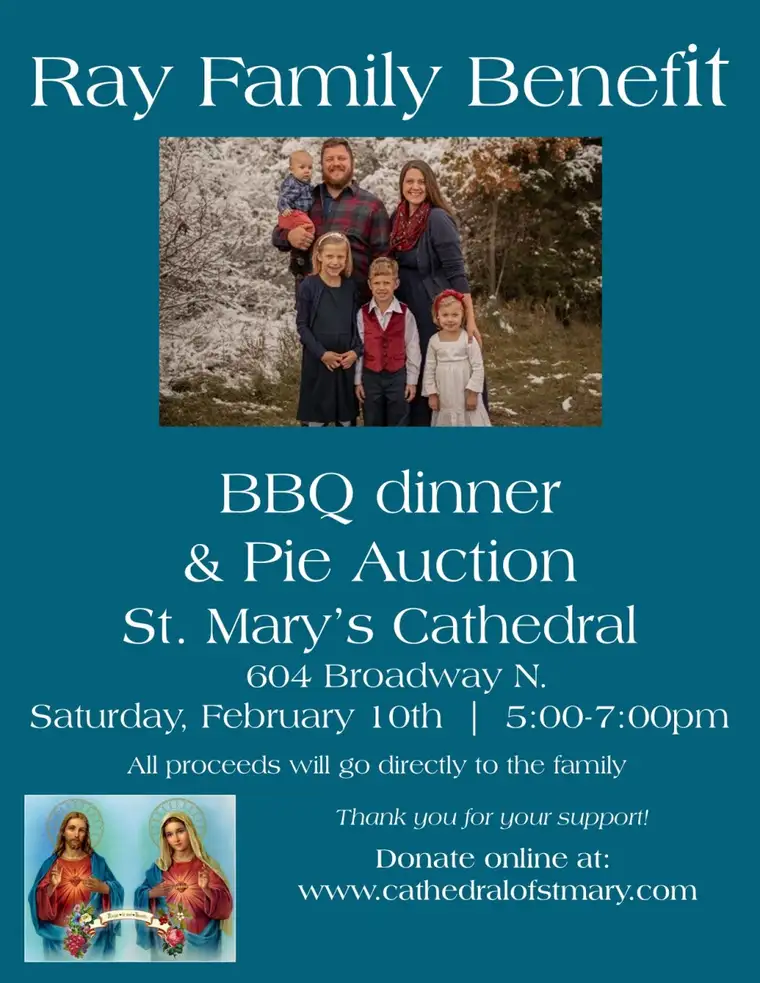

“Wasn’t it beautiful?” she said as I leaned down to give her a hug.
Such words might seem surprising in this time and place; at a funeral luncheon, with the words coming from Sara Ray, a new, young, widow, mother of four small children, wife of Nathan Ray, whose death on January 20 on a frozen Minnesota lake was unexpected and tragic.
But the words came as no surprise, for Sara had just been a central part of a sublime and, yes, beautiful, event: the giving over of her husband’s soul to God in a Requiem Mass.
It would be too much to say that death itself is beautiful, and certainly less so a shocking death like the Ray family is enduring. But the Christian can definitively conclude that bringing a soul to God surrounded by a faith-filled community—an atmosphere infused with the hope of life everlasting—is, in truth, beautiful.
During the funeral homily, the Rev. Jayson Miller repeated words from Scripture, “Love is as strong as death,” inviting mourners to be encouraged. “The eyes of the world see no further than this present world,” he said, quoting St. John Vianney, “but the Christian sees deep into eternity,” along with St. Paul, who said that as Christians, we don’t sorrow as those without hope (1 Thes. 4:13).
Though we will experience trial and corrupted bodies, he said, God will raise up our bodies and bring them to a glorious home. “We mourn, yet knowing Christ has overcome this world,” he added. “The bonds of charity which united us to Nate have not been broken in death…life is changed; it is not taken away.”
Father Miller implored us to continue to love and train our eyes toward eternity, noting that through the reality and reminder of death, we’re being called to grow in a new way. “This may be Nate’s last gift to us,” he said, that as we ponder the fleetingness of life, we can “increase our hope and trust in God…who keeps his promises.”
Friends shared at a prayer service earlier that Nate had been drawn to the sacrament of Confession the night before he left to prepare a surprise for his oldest son’s birthday in a fish house, where he quietly perished from carbon monoxide poisoning.
Nate died with the love of God on his mind and the love of family in his heart. It is a consolation, but it doesn’t remove the yoke of untimely death. We sorrow in hope, but daily life will bring many tears to the Rays.
God responds most powerfully at times through his people. The Knights of Columbus and Altar Society of St. Mary’s Cathedral have heard the call and will host a barbecue meal and pie sale to benefit the family from 5 to 7 p.m. on Saturday, Feb. 10, in the parish social hall at 604 N. Broadway, Fargo. Online donations can be given at www.cathedralofstmary.com .
Indeed, if not death itself, the love unleashed by death is beauty incarnate.
[For the sake of having a repository for my newspaper columns and articles, I reprint them here, with permission, a week after their run date. The preceding ran in The Forum newspaper on Feb. 5, 2024.]